4 frames each from 24 representative videos across the four content clusters. Side-quest companion to the YouTube galaxy: the API tells us what gets posted and watched, this tells us what it actually looks like. Click any card to open on YouTube.
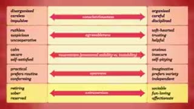
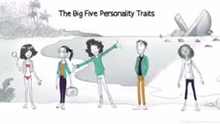
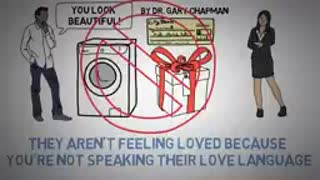
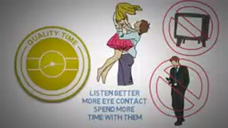
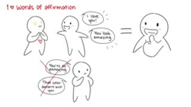
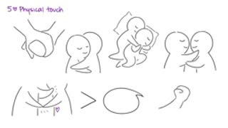
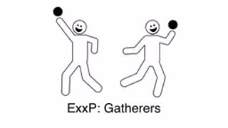
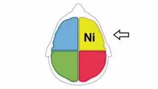
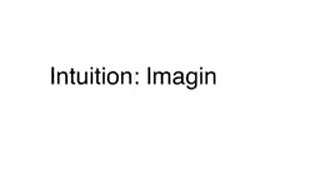
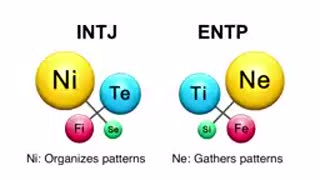
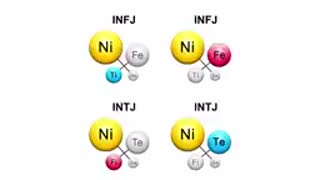
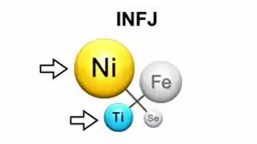
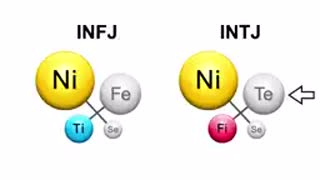